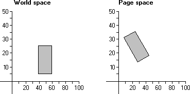
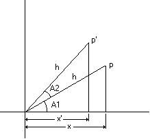

Many CAD applications provide features that rotate objects drawn in the client area. Applications that include rotation capabilities use the SetWorldTransform function to set the appropriate world-space to page-space transformation. This function receives a pointer to an XFORM structure containing the appropriate values. The eM11, eM12, eM21, and eM22 members of XFORM specify respectively, the cosine, sine, negative sine, and cosine of the angle of rotation.
When rotation occurs, the points that constitute an object are rotated with respect to the coordinate-space origin. The following illustration shows a 20-by-20-unit rectangle rotated 30 degrees when copied from world-coordinate space to page-coordinate space.

In the preceding illustration, each point in the rectangle was rotated 30 degrees with respect to the coordinate-space origin.
The following algorithm computes the new x-coordinate (x ') for a point (x,y ) that is rotated by angle A with respect to the coordinate-space origin.
x' = (x * cos A) - (y * sin A)
The following algorithm computes the y-coordinate (y ') for a point (x,y ) that is rotated by the angle A with respect to the origin.
y' = (x * sin A) + (y * cos A)
The two rotation transformations can be combined in a 2-by-2 matrix as follows.
|x' y'| == |x y| * | cos A sin A|
|-sin A cos A|
The 2-by-2 matrix that produced the rotation contains the following values.
| .8660 .5000|
|-.5000 .8660|
Rotation algorithms are based on trigonometry's addition theorem stating that the trigonometric function of a sum of two angles (A1 and A2 ) can be expressed in terms of the trigonometric functions of the two angles.
sin(A1 + A2) = (sin A1 * cos A2) + (cos A1 * sin A2)
cos(A1 + A2) = (cos A1 * cos A2) - (sin A1 * sin A2)
The following illustration shows a point p rotated counterclockwise to a new position p'. In addition, it shows two triangles formed by a line drawn from the coordinate-space origin to each point and a line drawn from each point through the x-axis.

Using trigonometry, the x-coordinate of point p can be obtained by multiplying the length of the hypotenuse h by the cosine of A1.
x = h * cos A1
The y-coordinate of point p can be obtained by multiplying the length of the hypotenuse h by the sine of A1.
y = h * sin A1
Likewise, the x-coordinate of point p' can be obtained by multiplying the length of the hypotenuse h by the cosine of (A1 +A2 ).
x' = h * cos (A1 + A2)
Finally, the y-coordinate of point p' can be obtained by multiplying the length of the hypotenuse h by the sine of (A1 +A2 ).
y' = h * sin (A1 + A2)
Using the addition theorem, the preceding algorithms become the following:
x' = (h * cos A1 * cos A2) - (h * sin A1 * sin A2)
y' = (h * cos A1 * sin A2) + (h * sin A1 * cos A2)
The rotation algorithms for a given point rotated by angle A2 can be obtained by substituting x for each occurrence of (h * cos A1 ) and by substituting y for each occurrence of (h * sin A1 ).
x' = (x * cos A2) - (y * sin A2)
y' = (x * sin A2) + (y * cos A2)
Â
Â